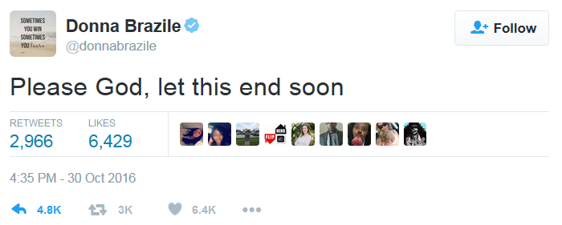

Subject: One of the questions directed to HRC tomorrow is from a woman with a rash
From: Donna Brazile <donna@brazileassociates.com>
Date: 2016-03-05 21:16
To: "john.podesta@gmail.com" <john.podesta@gmail.com>, Jennifer Palmieri <jpalmieri@hillaryclinton.com>
CC: Adrienne Elrod <aelrod@hillaryclinton.com>, Minyon Moore <Minyon.Moore@deweysquare.com>
Her family has lead poison and she will ask what, if anything, will Hillary do as president to help the ppl of Flint.
Folks, I did a service project today. It's so tragic. And what's worse, some homes have not been tested and it's important to encourage seniors to also get tested.
Sent from Donna's I Pad. Follow me on twitter @donnabrazile
Subject: Re: From time to time I get the questions in advance
From: Donna Brazile <donna@brazileassociates.com>
Date: 2016-03-12 19:54
To: Jennifer Palmieri <jpalmieri@hillaryclinton.com>
CC: Betsaida Alcantara <balcantara@hillaryclinton.com>, "john.podesta@gmail.com" <john.podesta@gmail.com>, Minyon Moore <Minyon.Moore@deweysquare.com>
I rarely hear it. I'll send a few more. Though some questions Roland submitted
Sent from Donna's I Pad. Follow me on twitter @donnabrazile
On Mar 12, 2016, at 4:42 PM, Jennifer Palmieri <jpalmieri@hillaryclinton.com> wrote:
Hi. Yes, it is one she gets asked about. Not everyone likes her answer but can share it.
Betsaida - can you send her answer on death penalty?
Sent from my iPhone
On Mar 12, 2016, at 4:39 PM, Donna Brazile <donna@brazileassociates.com> wrote:
Here's one that worries me about HRC.
DEATH PENALTY
19 states and the District of Columbia have banned the death penalty. 31 states, including Ohio, still have the death penalty. According to the National Coalition to Abolish the Death Penalty, since 1973, 156 people have been on death row and later set free. Since 1976, 1,414 people have been executed in the U.S. That’s 11% of Americans who were sentenced to die, but later exonerated and freed. Should Ohio and the 30 other states join the current list and abolish the death penalty?
Sent from Donna's I Pad. Follow me on twitter @donnabrazile
Subject: Re: From time to time I get the questions in advance
From: Donna Brazile <donna@brazileassociates.com>
Date: 3/12/2016 4:55 PM
To: Jennifer Palmieri <jpalmieri@hillaryclinton.com>
CC: Betsaida Alcantara <balcantara@hillaryclinton.com>, "john.podesta@gmail.com" <john.podesta@gmail.com>, Minyon Moore <Minyon.Moore@deweysquare.com>
UNIONS
Secretary Clinton, yesterday in St. Louis, you spoke at carpenters and others “who built this nation.” Both you and Senator Sanders depend on big union support. President Obama pushed for a massive infrastructure bill that would mean millions of jobs for in this area. Yet many of these trade unions have locked out Blacks and other minorities for years. Will you call a meeting with them before November, and if you win, when you are president, to demand that the trade unions stop freezing Blacks and others from these good paying jobs?
INCOME INEQUALITY
Senators Sanders, you and Hillary Clinton have often talked about the problem of income inequality. Many other Democrats have. Rev. Jesse Jackson Sr. has talked about the lack of economic upward mobility for Black and other minorities in Silicon Valley and corporate America. Yet Power Pac Plus did a study showing that four years ago, the Democratic Party spent $514 million on consultants, and only 1.7%, or $8.4 million went to minority-owned firms or firms with at least one minority principle. How can the public be assured that either one of you or the Democratic Party can fix income inequality when the same party practices it?
Sent from Donna's I Pad. Follow me on twitter @donnabrazile